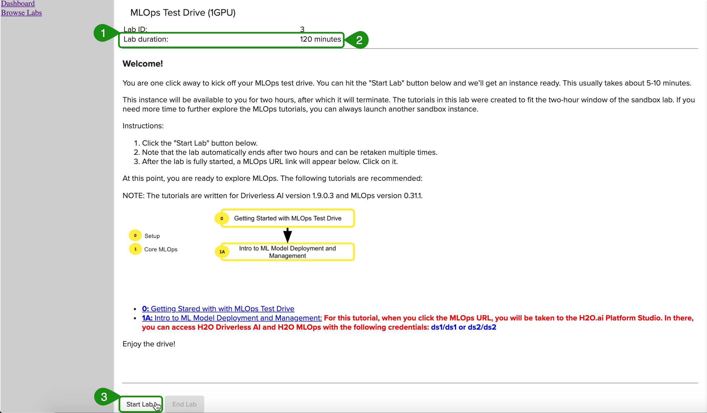
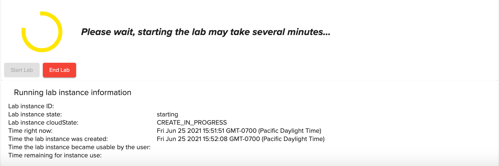
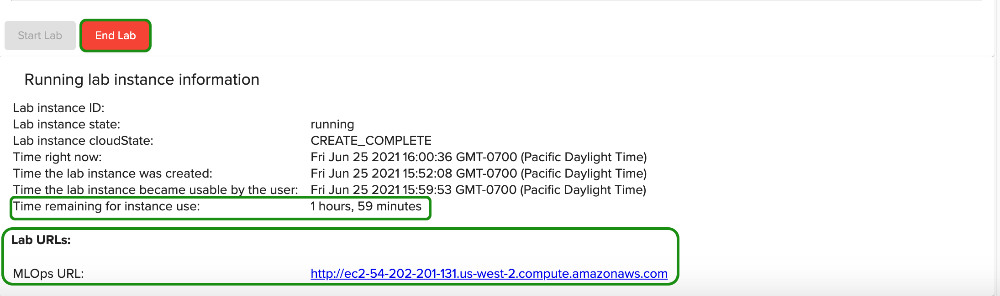

MLOps Test Drive is a two-hour lab session that exists in H2O's Aquarium. Aquarium is the H2O.ai cloud environment providing software access for workshops, conferences, and training.
If you are new to MLOps, we highly recommend finishing this short self-paced course to set up your MLOps Test Drive
All MLOps Test Drive Lab sessions will terminate after two-hours. No work will be saved!. However, you can retake the lab multiple times.
Note: Aquarium's MLOps Test Drive lab has a license key built-in, so you don't need to request one to use it.
1. Go to the Aquarium site by pasting the URL below to your chosen browser or click on Aquarium.
http://aquarium.h2o.ai/login
2. The URL will take you to the Aquarium login page, where you need to create an account.
1. Welcome to the Aquarium Login page!

2. Select Create a new account

3. Enter:
- First Name
- Last Name
- Organization
- Country
4. Through the reCAPTCHA test, verify that you are not a robot by checking the "I'm not a robot" box.
5. Click on Create account and email temporary password at the bottom of the page.
Note: A password will be sent to your email within minutes.
If you are having issues receiving a temporary password try the following:
- Force-reload on the Aquarium page
- Try a different browser
- Check corporate settings in your machine
If the three steps above don't work, please send us an email at training@h2o.ai and include the email you used to create the Aquarium account, type of browser you are using, country, and if you can see the reCAPTCHA test on the Aquarium Login page.
6. Check your email for the password.
1. Enter the email you used to create the Aquarium password.
2. Enter the password you received over email from Aquarium.
3. Verify that you are not a robot by checking the "I'm not a robot" box.
4. Click on Login.
Note: If you are having issues logging in, click the send us an email hyperlink.

1. If you forgot your password, select I forgot my password.

2. Enter your email, verify that you are not a robot by checking the "I'm not a robot" box, then click on Email temporary password. Another password will be emailed to you.

After a successful login, select "Browse Labs" located on the top-left corner of the page, then select Lab 3 - MLOps Test Drive (1GPU).

After the MLOps Test Drive lab appears:

Note:
- Lab duration is 120 minutes, after that the session will terminate
- Note that the lab automatically ends after two hours and can be taken multiple times
- Start button starts the lab session
1. To start a lab click on Start Lab. You will see an image similar to the one below:

2. Aquarium will then start the lab session for you (this will take a few minutes). After the lab session starts, a similar image should appear:

Note:
- The remainning time before the current instance, terminates.
- MLOps URL
- End Lab
3. Once the lab has started, the MLOps URL will appear at the bottom of the page. Click on that URL. The URL will take you to the H2O.ai Platform Studio where you will see both H2O Driverless AI and H2O MLOps.

1. To logout, click on the box on the top-right corner of the page and select logout.

Have any questions about Aquarium? Sign up for H2O.ai's Slack Community and post your questions under the #cloud channel. Members of the H2O.ai community will respond as soon as they are available.